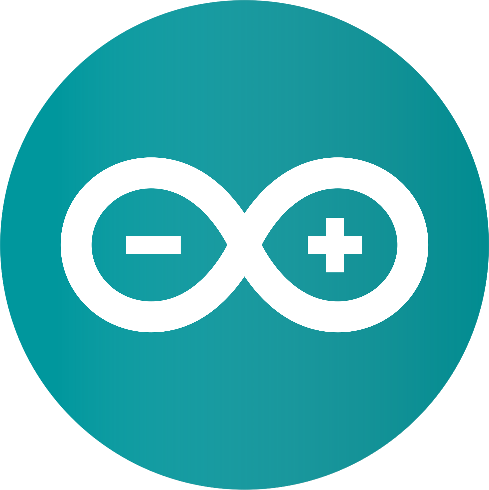
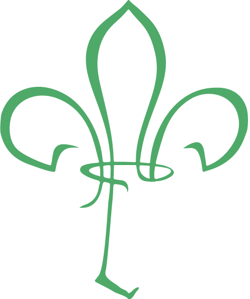

REGLA DIGITAL
Medición ultrasónica interactiva
⛶
CONEXIÓN
MODO SIMULACIÓN
⌄

COLEGIO SANTA CATERINA DA SIENA
Clase de Robótica Educativa
EXPOSICIÓN
GRUPO 1 · 7.º B
PROYECTO ACADÉMICO · 2026
DISTANCIA DETECTADA
35,0
cm
MEDICIÓN ESTABLE
HC-SR04
REFERENCIA
ZONA MÍNIMA 2 cm
RANGO DE DEMOSTRACIÓN 100 cm
❄
CONGELAR
Capturar lectura
A
MARCAR REFERENCIA
Comparar posiciones
◎
INICIAR DESAFÍO
Alcanzar una distancia
LECTURA CAPTURADA
—
REFERENCIA / DIFERENCIA
—
DESAFÍO
Sin iniciar